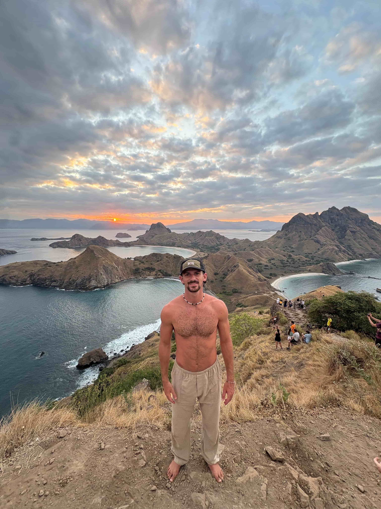
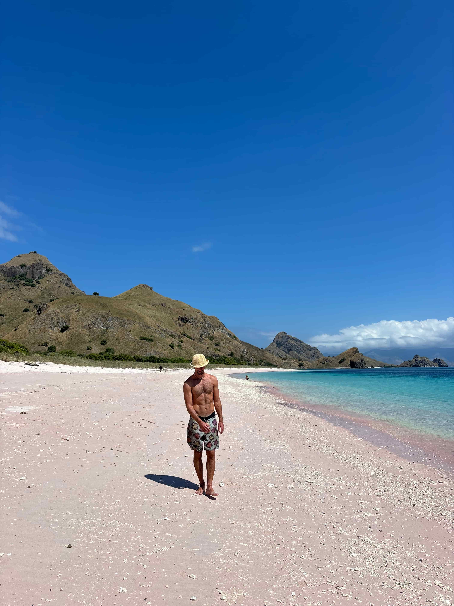
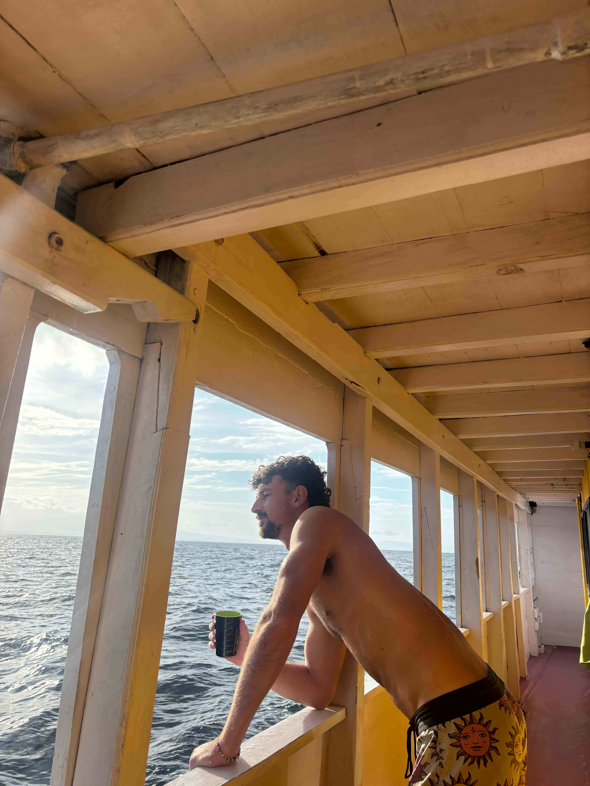

Sunday, July 6th, Flores, Indonesia
Today is my last day in Indonesia. I arrived in Flores from Lombok via a 4-day, 3-night cruise with the company Wanua. I had previously done a 3-day, 2-night cruise between islands in the Philippines and loved it, so I was excited for this one in Indo. This time, we slept on the boat every night instead of camping on small islands. There were about 40 people on the cruise—mostly British, some Dutch, some French, and a couple of Americans. Most nationalities stuck to themselves. The stops along the four days were incredible. The highlight for me was swimming with whale sharks. I’ve snorkeled a lot on this trip and wasn’t overly optimistic about this experience, but snorkeling with whale sharks turned out to be one of my favorite moments of the entire journey. I was woken up around 6:30 AM and immediately jumped into the water with the huge, beautiful creatures. It was thrilling—sometimes they’d swim off into the deep ocean and disappear, and then suddenly you’d turn your head and see a whale shark coming straight toward you. They get so close you could almost touch them. It was magical watching them pop in and out of the water and getting to swim so close to them. Besides the whale sharks, I saw Komodo dragons, a pink beach, and beautiful sunsets. There was only one night when the waters were really choppy and I felt a bit sick. Overall, it was an awesome experience—disconnecting from everything, chilling on the water, and seeing beautiful animals and nature. My month in Indonesia has been diverse and deeply rewarding. Tomorrow, I’ll journey to the Land of the Rising Sun—Japan—via four flights. It’s a surreal feeling, because 1.5 years ago I traveled to Japan for the first time, marking my first trip to Asia. Now, I’ve visited nearly every Asian country I set out to see, and I’m returning to Japan to explore the northern island of Hokkaido. Through this travel, I’ve fallen in love with the lawlessness, rawness, authenticity, and simplicity of the third world in Southeast Asia. Going back to the first world with a fresh vibe and perspective will be an interesting contrast to my previous Japan trip. Still, I’m looking forward to it—because I love onsens and sushi. Be on the lookout for some deep introspection coming to the blog soon—I owe it to you, and to myself. Not much more to say today. Thanks for sticking with me on these adventures.
  